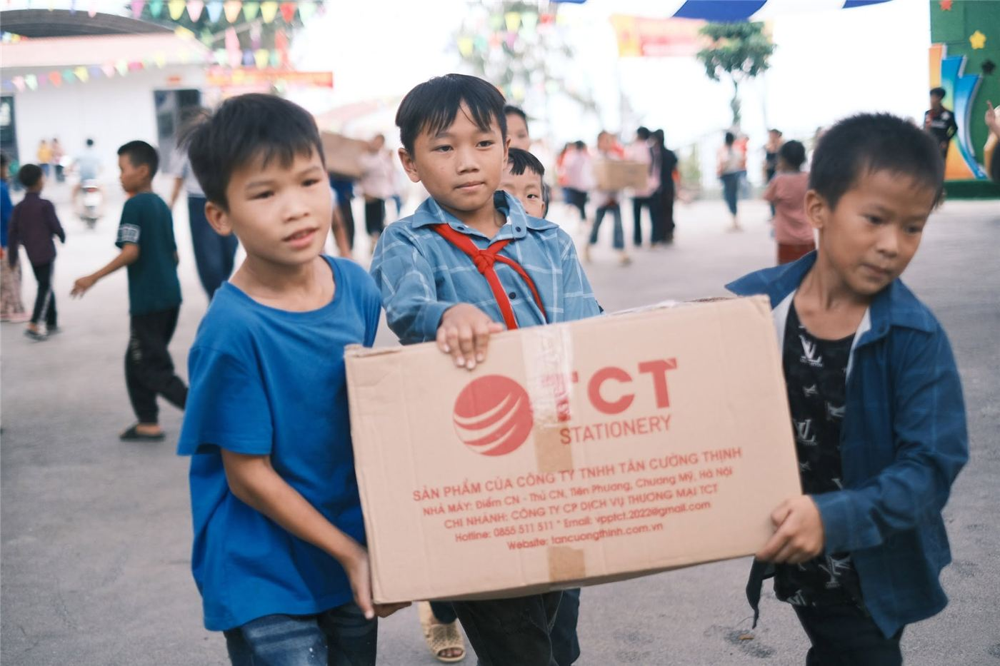

Kết nối, sách, học bổng, đồng hành
Gửi lên non một mùa thương, để tuổi thơ em có thêm những ngày thật đẹp.
Mùa Yêu Thương đi từ câu chuyện đến hành động, cung cấp thông tin về những nhu cầu thực tế và mở ra các hoạt động hỗ trợ trẻ em, điểm trường thông qua sách, học bổng và kết nối nguồn lực.
Từ những câu chuyện được kể, Mùa Yêu Thương trở thành điểm nối để công chúng chuyển từ sự quan tâm sang hành động thông qua các hoạt động:
 01
01
Câu chuyện trên non
Đăng tải tin bài, phóng sự, câu chuyện về trẻ em, điểm trường và những hoạt động cộng đồng. Đây là nơi công chúng tìm hiểu thông tin, hiểu hơn về đời sống và những nhu cầu thực tế.
Khám phá các câu chuyện → 02Điều ước của em
Là nơi cá nhân, lớp học, điểm trường hoặc địa phương chia sẻ câu chuyện, nguyện vọng và nhu cầu hỗ trợ. Người có nhu cầu có thể gửi thông tin qua đường link hoặc biểu mẫu đăng ký để website tiếp nhận, xác minh và xem xét đăng tải.
Gửi điều ước của em →
03Nối một sợi thương
Là nơi các nhà hảo tâm, doanh nghiệp, nhà cung cấp, đơn vị tài trợ hoặc cá nhân mong muốn đồng hành gửi thông tin, đề xuất hỗ trợ qua đường link hoặc biểu mẫu kết nối. Từ đó, website làm cầu nối giữa nguồn lực và những nhu cầu phù hợp.
Gửi đề xuất hỗ trợ →Câu chuyện trên non
8 bàiTin nổi bật
Những trang sách ở Kim Đồng: Khi nhu cầu đọc cần được lắng nghe
Tại Trường Phổ thông dân tộc bán trú Tiểu học Kim Đồng, huyện Tủa Chùa, tỉnh Điện Biên, sách được đưa đến với học sinh qua hai không gian: phòng đọc và thư viện xanh. Đây là những nơi các em có thể tìm đọc sách, báo, mở rộng kiến thức ngoài nội dung bài học trên lớp. Theo bài viết “Thư viện sách cho học sinh vùng cao” đăng trên Báo Điện Biên Phủ ngày 4/1/2023, nhà trường khi đó có hơn 600 học sinh. Thư viện được công nhận là thư viện tiên tiến từ năm 2020, có chỗ ngồi đọc cho khoảng 100 học sinh.
Đọc bàiNhững trang sách ở Kim Đồng: Khi nhu cầu đọc cần được lắng nghe
Tại Trường Phổ thông dân tộc bán trú Tiểu học Kim Đồng, huyện Tủa Chùa, tỉnh Điện Biên, sách được đưa đến với học sinh qua hai không gian: phòng đọc và thư viện xanh. Đây là những nơi các em có thể tìm đọc sách, báo, mở rộng kiến thức ngoài nội dung bài học trên lớp.

Một ngày ở điểm trường: Những điều làm nên nhịp sống học đường
Ở điểm trường Khau Noong, Trường Mầm non Thạch Lâm, huyện Bảo Lâm, Cao Bằng, chuyện đến lớp không chỉ gói gọn trong những giờ học. Bữa ăn giữa ngày, khoảng thời gian vui chơi và sự chăm sóc của thầy cô cũng góp phần làm nên nhịp sống học đường của những đứa trẻ vùng cao.

Góc đọc ở trường học: Có sách rồi, làm sao để các em đọc thường xuyên?
Trao tặng sách giúp học sinh có thêm cơ hội tiếp cận tri thức. Nhưng để những cuốn sách thực sự trở thành người bạn đồng hành của trẻ, nhà trường còn cần tạo không gian, thời gian và hoạt động đọc phù hợp với lứa tuổi.

Từ nhu cầu của lớp học đến kế hoạch hỗ trợ thiết thực
Không phải cứ trao tặng thật nhiều sách vở, thiết bị hay quà tặng là đã đáp ứng đúng nhu cầu của một điểm trường. Muốn nguồn lực đến đúng nơi, việc hỗ trợ cần bắt đầu từ những khó khăn cụ thể của nhà trường, được sắp xếp theo mức độ ưu tiên và có phương án theo dõi sau khi triển khai.

Người giữ lửa lớp học ở Na Sang
Hơn 15 năm trở về quê hương dạy học, cô Lò Thị Viên không chỉ tìm cách làm mới những giờ Địa lý mà còn kiên trì vận động học sinh đến lớp, góp tiếng nói để cải thiện điều kiện học tập và sinh hoạt của học trò vùng cao.

Từ trang sách, em hình dung về thế giới rộng lớn
Với Giàng Thị Báu, học sinh lớp 6A1, Trường THCS Mường Thín, huyện Tuần Giáo, Điện Biên, giờ ra chơi không chỉ là khoảng thời gian nghỉ ngơi cùng bạn bè. Đó còn là lúc em tìm đến thư viện xanh, chọn một cuốn sách và khám phá những điều nằm ngoài cuộc sống quen thuộc quanh mình.

Quỹ Hy Vọng triển khai chương trình hỗ trợ thư viện cho học sinh vùng cao
Quỹ Hy Vọng triển khai chương trình phát triển thư viện tại các trường học vùng cao, góp phần mở rộng cơ hội tiếp cận sách và tài nguyên học tập cho học sinh.

Chuyện Trên Non kết nối nhu cầu học tập với nguồn lực cộng đồng
Chuyện Trên Non hướng đến kết nối nhu cầu học tập được xác minh tại các trường học vùng cao với nguồn lực hỗ trợ từ cá nhân, doanh nghiệp và tổ chức xã hội.
-
30+
Điểm trường vùng cao
-
4000+
Em nhỏ đang nhận được tiền hỗ trợ cải thiện bữa ăn bán trú
-
5k+
Học sinh